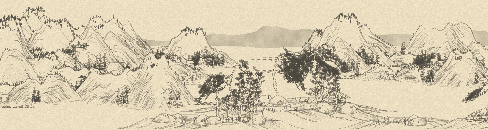
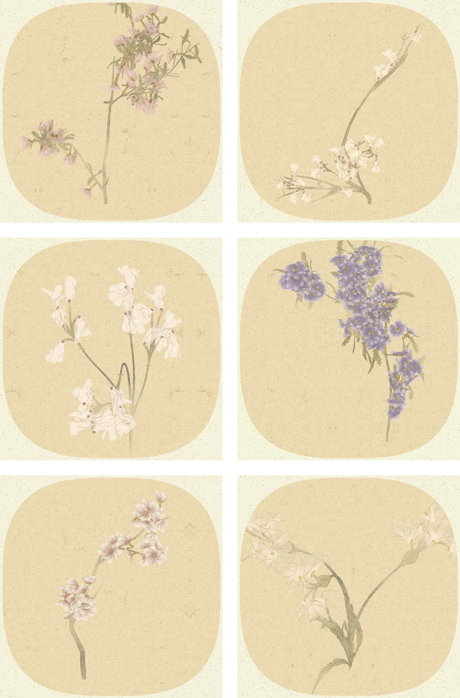
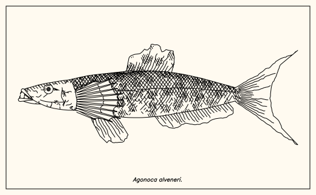

끝없이 옆으로 이어지는 벡터(SVG) 산수 두루마리. 산·나무·누각을 노이즈로 직접 모델링합니다.

공필화 기법을 흉내 낸, 실제로는 존재하지 않는 꽃 그림. 시드를 바꿔 원하는 만큼 생성하고 저장하세요.

존재하지 않는 꽃 한 종으로 꽃밭을 피우고, 그 위로 무작위 물고기 열 마리가 헤엄칩니다. 원본 먹선 또는 p5.brush 수채 화풍으로.
수학 함수와 노이즈만으로 그려내는 절차적 동양화. 새로고침할 때마다 세상에 없던 그림이 태어납니다.

끝없이 옆으로 이어지는 벡터(SVG) 산수 두루마리. 산·나무·누각을 노이즈로 직접 모델링합니다.

공필화 기법을 흉내 낸, 실제로는 존재하지 않는 꽃 그림. 시드를 바꿔 원하는 만큼 생성하고 저장하세요.

존재하지 않는 꽃 한 종으로 꽃밭을 피우고, 그 위로 무작위 물고기 열 마리가 헤엄칩니다. 원본 먹선 또는 p5.brush 수채 화풍으로.